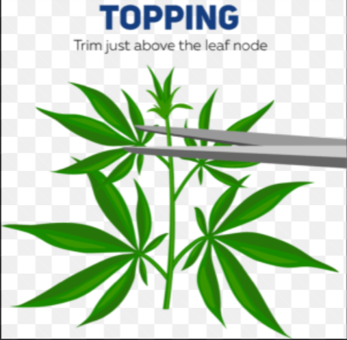
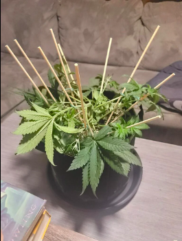

Increasing your yeild
Topping
Topping is a technique that is used to increase the yeild of the plant. The main part of the plant that produces nug, is the main stem. Topping increases the amount of main stems the plant grows. To do this you have to clip the top of a plant where the new growth is. Clipping the small new growth of the two most recently created leaves will allow two stems to form where there was only one previously. Topping is only reccomended for an indoor grow.
Click here to see a video of topping
Low Stress Training
Low stress training is another technique to increase yeild. While this technique also increses the amount of main stems a plant has, it does another thing. Low stress training also increases how much nug the branch can hold by making it stronger. While both topping and low stress training (or LST) are reccomeded I find that LST does more to increase my yeild. Despite that, it has more risk then topping. To low stress train you have to pinch and twist all of the stems on the plant. You do this in orders to let the lower nodes (or stems) reach the same light level. Ultimatly at the end of your grow you want all the nodes to be level with eachother. That will allow your light to be equally distributed to your plant. The reason this is risky is beacuse if you bend and twist your plant too much it can snap. Start off slow then LST harshser as you get the hang of it.
 Click here to see a video of low stress training